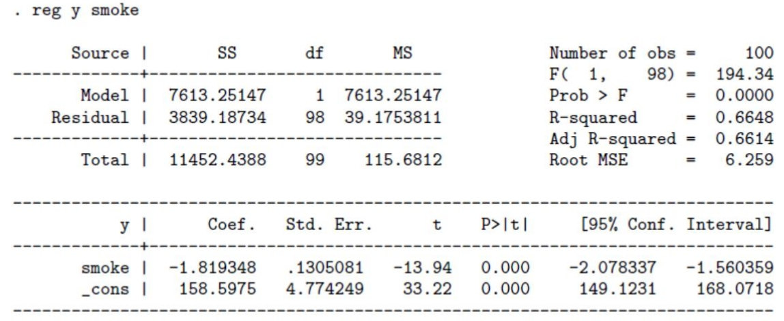
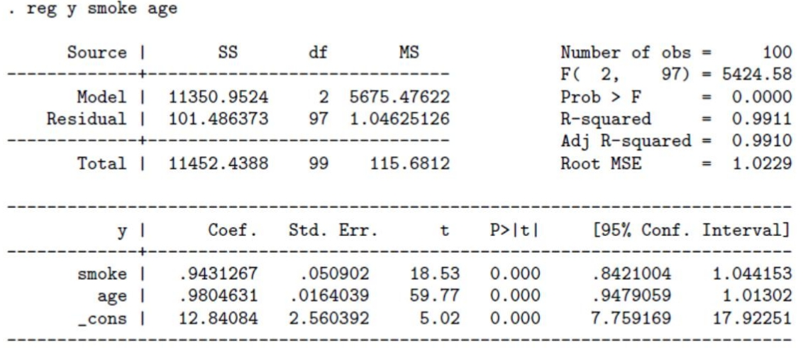

Clase 3 · Causalidad y variable omitida
Contenido oficial de la semana
Esta página reproduce íntegras y en orden las diapositivas de la semana 3 (sem3/):
Clase3.tex (Parte 1) y Clase4.tex (Parte 2), ambas de la cátedra del viernes. Los bloques
Interactivo, los casos y las preguntas son material adicional para estudiar.
Cómo estudiar esta clase
La clase está ordenada en 8 temas. Cada tema parte con una pregunta guía, sigue con las láminas y los simuladores, y termina con ✍️ preguntas de selección múltiple (cada alternativa incorrecta explica por qué no lo es) y, en casi todos, un 🧪 ejercicio de R que puedes editar y ejecutar aquí mismo, sin instalar nada. Los 7 ejercicios de R en un solo archivo: 📥 clase3.R.
🎯 Objetivos de la sesión
- Distinguir entre esperanza condicional (lo que describe una regresión) y efecto causal.
- Usar el modelo de outcomes potenciales de Rubin para definir el ATE y el ATT.
- Descomponer una diferencia de promedios en efecto causal + sesgo de selección.
- Entender por qué la aleatorización elimina el sesgo de selección.
- Derivar el sesgo por variable omitida y predecir su signo.
- Evaluar cuándo agregar controles corrige el sesgo y por qué las variables irrelevantes aumentan la varianza.
🗓️ Agenda de la cátedra (viernes 18:40 – 21:25)
Haz clic en un tema para ir directo a él.
- 18:401¿Correlación o causalidad?Parte 1 · láminas 1–2 · ✍️ 2 preguntas
- 19:002Outcomes potenciales: ATE y ATTParte 1 · láminas 3–8 · ✍️ 3 preguntas · 🧪 R
- 19:303La trampa de comparar: sesgo de selecciónParte 1 · láminas 9–14 · ✍️ 3 preguntas · 🧪 R
- 19:55☕ Receso
- 20:054Aleatorizar: dejar que decida una monedaParte 1 · láminas 15–16 · ✍️ 2 preguntas · 🧪 R
- 20:205Del sesgo de selección a la variable omitidaParte 2 · láminas 1–4 · ✍️ 2 preguntas · 🧪 R
- 20:406El signo del sesgoParte 2 · láminas 5–6 · ✍️ 2 preguntas · 🧪 R
- 20:557Controles: el ejemplo de fumar y la edadParte 2 · láminas 7–9 · ✍️ 2 preguntas · 🧪 R
- 21:108¿Más es mejor? Controles irrelevantes y conclusionesParte 2 · láminas 10–12 · ✍️ 2 preguntas · 🧪 R
- 21:25✅ Ideas clave, autoevaluación y cierre
Causalidad y sesgo de selección
📄 Diapositivas: sem3/Clase3.tex · 16 láminas
¿Correlación o causalidad?
¿Ganan más quienes estudian más porque estudian, o por otros motivos?
Esperanza condicional versus causalidad
-
Hasta ahora, hemos visto como funciona el modelo de regresión lineal que nos entrega la esperanza condicional de una variable condicional a la otra.
-
Nos permite describir muchas realidades empíricas. Ejemplos:
-
¿Las personas con más educación reciben sueldos mayores?
-
¿Estudiar Economía está asociado con un mayor sueldo?
-
-
Pero, ¿son las relaciones estimadas causales?
-
¿Es la educación lo que aumenta el salario, o simplemente observamos que las personas que se educan más tienen más salario por otros motivos?
-
Construiremos un marco analítico para pensar el problema de causalidad.
Contrafactual
-
Para pensar en causalidad, tenemos que imaginar un mundo contrafactual.
-
¿Qué pasaría si pudieramos observar a las personas que fueron a la universidad en un mundo alternativo en que no hubieran ido?
- Problema fundamental: No podemos calcular directamente el impacto causal de un tratamiento para un individuo \(i\) porque no podemos observar al mismo individuo en los dos estados (con y sin tratamiento)
-
Definición de Contrafactual: El resultado que los mismos participantes de un programa hubieran obtenido en el caso hipotético de no haber participado.
✍️ Practica · Tema 1
Una regresión muestra que quienes estudiaron Economía ganan, en promedio, 20% más que el resto. ¿Qué podemos concluir?
✅ La regresión entrega la esperanza condicional E[y|x]: describe una realidad, pero no dice por qué ocurre (lámina 1).
Ana fue a la universidad y hoy gana $1 200 000. ¿Cuál es su contrafactual?
✅ Es la definición de la lámina 2: el resultado que los mismos participantes habrían obtenido sin participar. Nunca lo observamos.
Outcomes potenciales: ATE y ATT
¿Cómo se define un efecto causal si nunca vemos a la misma persona en los dos mundos?
El marco teórico de Rubin
-
Estamos interesados en medir el impacto de un "Tratamiento" que es una variable binaria (recibirlo o no) en \(y\).
-
El tratamiento podria ser un subsidio del gobierno, participar en un programa determinado, becas para la universidad, recibir vacunas, etc.
-
Vamos a definir dos grupos: los tratados (T) y el grupo no tratado o control (NT).
-
Modelo de outcomes potenciales (Rubin)
-
Buscamos saber el impacto causal del tratamiento (T) en una variable \(Y\).
-
\(Y_i\): outcome observado para la persona \(i\).
-
\(T_i\): variable aleatoria binaria que toma valor \(1\) si fue tratado y \(0\) si no lo fue.
-
\(Y_i^T\): es el outcome potencial del individuo si fue tratado.
-
\(Y_i^{NT}\): es el outcome potencial del individuo si NO fue tratado.
-
-
El impacto de recibir \(T\) para cada individuo sería \(Y_i^T - Y_i^{NT}\). ¿Puedo observar esto?
-
Nunca observaremos ambos outcomes (o estados) a la vez.
ATE y ATT
-
El impacto promedio causal (Average Treatment Effect, ATE) es:
\[ ATE = E[Y_i^T - Y_i^{NT}] \] -
No observable porque a cada \(i\) lo observamos en un solo estado (tratado o no).
-
El impacto promedio causal para los tratados (Average Treatment Effect on the Treated, ATT) es: \(E[Y_i^T - Y_i^{NT} | T_i=1]\).
-
Tampoco lo observamos porque \(E[Y_i^{NT}|T_i=1]\) no es observable.
Observado y no observado
Ejemplo de que vemos y que no vemos:
| Datos | Outcomes Potenciales | |||
|---|---|---|---|---|
| \(\mathrm{T}_{i}\) | \(\mathrm{Y}_{i}\) | \(\mathrm{Y}_{i}^{NT}\) | \(\mathrm{Y}_{i}^{T}\) | |
| Sofia | 1 | 100 | \(? ?\) | 100 |
| Paula | 0 | 40 | 40 | \(? ?\) |
| Ezequiel | 1 | 80 | \(? ?\) | 80 |
| Juan | 0 | 20 | 20 | \(? ?\) |
| Caro | 1 | 60 | \(? ?\) | 60 |
El efecto causal promedio, Average Treatment Effect, sería
NO observable. Ej: no puedo saber \(Y_i^{NT}\) para Caro porque no sé como hubiese sido su vida si no hubiera recibido el tratamiento.
Al menos nos gustaría identificar el efecto del tratamiento para el grupo de tratados \(ATT = E[Y_i^T - Y_i^{NT}|T_i=1]\). Tampoco se puede observar porque \(E[Y_i^{NT}|T_i=1]\) es no observable.
Problema estimación del impacto causal
-
Cada individuo recorre una sola rama (línea sólida); la rama contrafactual (roja, punteada) nunca se observa.
-
Este es el problema fundamental de la inferencia causal: para cada \(i\) solo vemos \(Y_i^{T}\) o \(Y_i^{NT}\), nunca ambos.
Usar datos observacionales para inferir el ATE
-
No podemos estimar el ATE o el ATT directamente.
-
Usamos datos que si observamos para estimar el efecto del tratamiento y pensar qué supuestos necesitamos para que eso nos de el ATE.
-
Como no puedo comparar las mismas personas en el mundo alternativo, la magia del supuesto esta en encontrar un grupo de comparación (contrafactual) que hubiera sido similar al grupo tratado en ausencia del tratamiento.
✍️ Practica · Tema 2
En la tabla de la lámina 6, Paula no fue tratada e Yᵢ = 40. ¿Qué dato suyo falta?
✅ Para los no tratados falta Yᵀ; para los tratados, Yᴺᵀ. Siempre falta la mitad de la tabla.
¿Qué diferencia al ATT del ATE?
✅ ATE = E[Yᵀ − Yᴺᵀ]; ATT = E[Yᵀ − Yᴺᵀ | T = 1].
En el paso 2 del simulador, los efectos de Sofía, Ezequiel y Caro (los tratados) son 25, 20 y 15. ¿Cuánto vale el ATT?
✅ ATT = (25 + 20 + 15) / 3 = 20.
🧪 Practica en R · La tabla de la lámina 6
Reproduce el modo Dios del simulador: arma la tabla con los dos outcomes potenciales de cada persona y calcula el ATE y el ATT.
# Tabla de la lámina 6 con los contrafactuales "revelados" (los ?? son inventados)
datos <- data.frame(
nombre = c("Sofía", "Paula", "Ezequiel", "Juan", "Caro"),
T = c(1, 0, 1, 0, 1), # 1 = fue a la universidad
Y_NT = c(75, 40, 60, 20, 45), # salario SIN universidad
Y_T = c(100, 55, 80, 30, 60) # salario CON universidad
)
# Efecto individual: en la vida real nunca se observa
datos$efecto <- datos$Y_T - datos$Y_NT
datos
ATE <- mean(datos$efecto) # las 5 personas
ATT <- mean(datos$efecto[datos$T == 1]) # solo quienes fueron
c(ATE = ATE, ATT = ATT)
🎯 Reto: cambia el Y_T de Juan de 30 a 60. ¿Cambia el ATT? ¿Y el ATE? ¿Por qué?
La trampa de comparar: sesgo de selección
¿Por qué comparar a quienes recibieron un tratamiento con quienes no puede engañarnos?
ATT y sesgo de selección
-
Supongamos que queremos calcular el efecto del tratamiento \(T\) en la variable \(y\). Ejemplo: el efecto de ir a la universidad (T) en el salario.
-
No podemos ver directamente el ATE o ATT.
-
Podemos comparar el promedio de Y para el grupo de personas que fue a la universidad contra el promedio de y para los que no fueron (los vamos a llamar control). Esto es lo que hacemos en MCO.
\[ \beta_1=E\left[Y_{i} \mid T_{i}=1\right]-E\left[Y_{i} \mid T_{i}=0\right] \] -
Es esto el ATE? En general, No! Porque en contextos no experimentales, los tratados eligen participar del programa y entonces difieren en muchas características con los del grupo no tratado.
- Ejemplo: La decisión de asistir a la universidad es voluntaria y puede estar influenciada por diversos factores, como intereses personales, recursos económicos y oportunidades previas. Debido a esto, las personas que no cursaron estudios universitarios pueden diferir en varias características de aquellas que sí lo hicieron. Compararlas directamente podría no ser adecuado, ya que no constituyen un buen contrafactual para evaluar el impacto de la educación universitaria.
Vamos a descomponer \(\beta_1\) en el efecto causal del tratamiento y un sesgo:
sumamos y restamos el término: \(E\left[Y_{i}^{\mathrm{NT}} \mid T_{i}=1\right]\)
- El primer término corresponde a ATT: El efecto causal del tratamiento para los tratados.
-
Al segundo término se lo llama sesgo de selección. Surge porque el grupo que recibió tratamiento ya era diferente al control.
-
Intuición del sesgo: En el mundo contrafactual en el que nadie tuvo tratamiento, el grupo que obtuvo tratamiendo igual hubiera tenido un diferente outcome porque ya era diferente al grupo que no obtuvo el tratamiento.
Sesgo de selección
-
Las personas que toman una acción tienen características distintas a las personas que no lo hacen.
-
Por ejemplo, la gente que va a la universidad tiene alguna característica que hace que incluso en ausencia de ir a la universidad, hubieran tenido mayores salarios.
-
Hay sesgo de selección cuando, incluso en ausencia de una intervención, los resultados promedio de las unidades tratadas y no tratadas son distintos después del programa.
-
¿Qué signo toma el sesgo de selección?
Ejemplo: una alarma para las casas
-
Queremos saber si las alarmas para las casas bajan el delito.
-
El problema es que cada individuo decide si poner una alarma o no en su casa.
-
¿En qué podrían diferir los que ponen alarmas o no?
-
¿Cómo sería el sesgo de selección?
-
¿Qué pasaría entonces si comparamos la cantidad de robos en casas con y sin alarmas?
-
¿Sería el efecto causal?
✍️ Practica · Tema 3
En el simulador, la diferencia observada es 50 y el ATT es 20. ¿Cuánto vale el sesgo de selección?
✅ β₁ = ATT + sesgo ⇒ 50 = 20 + 30. Los tratados habrían ganado 30 más aun sin universidad.
Comparas las notas de quienes asisten a un preuniversitario pagado con las de quienes no asisten. ¿Qué signo esperas en el sesgo de selección?
✅ Sesgo = E[Yᴺᵀ | T = 1] − E[Yᴺᵀ | T = 0] > 0: la comparación simple sobreestima el efecto del preuniversitario.
Las casas con alarma registran más robos que las casas sin alarma. ¿Qué lectura es consistente con la lámina 14?
✅ Sin alarma, las casas que la instalaron igual habrían tenido más robos: la diferencia observada mezcla ese sesgo con el efecto.
🧪 Practica en R · Diferencia observada = ATT + sesgo
Con la misma tabla, calcula lo que sí vemos en los datos y comprueba la descomposición de la lámina 11. Fíjate en que lm() entrega exactamente la diferencia de promedios.
datos <- data.frame(
T = c(1, 0, 1, 0, 1),
Y_NT = c(75, 40, 60, 20, 45),
Y_T = c(100, 55, 80, 30, 60)
)
# Lo único que vemos: el outcome del mundo en que vivió cada uno
datos$Y <- ifelse(datos$T == 1, datos$Y_T, datos$Y_NT)
dif_obs <- mean(datos$Y[datos$T == 1]) - mean(datos$Y[datos$T == 0])
ATT <- mean(datos$Y_T[datos$T == 1] - datos$Y_NT[datos$T == 1])
sesgo <- mean(datos$Y_NT[datos$T == 1]) - mean(datos$Y_NT[datos$T == 0])
c(diferencia = dif_obs, ATT = ATT, sesgo = sesgo,
ATT_mas_sesgo = ATT + sesgo)
# MCO de Y sobre T da justo la diferencia observada (lámina 9)
coef(lm(Y ~ T, data = datos))
🎯 Reto: ¿qué valores de Y_NT tendrían que tener Sofía, Ezequiel y Caro para que el sesgo fuera cero? Pruébalo: ¿qué pasa con la diferencia observada?
Aleatorizar: dejar que decida una moneda
¿Qué cambia cuando es una moneda, y no la persona, la que decide quién recibe el tratamiento?
Aleatorización
-
¿Qué supuesto necesito para que no haya sesgo de selección?
-
El supuesto clave es que los outcomes potenciales sean independientes del tratamiento.
-
Aleatorizar: determinar aleatoriamente quien recibe el tratamiento y quien no, resuelve el problema.
-
Esto implica que quien recibe el tratamiento, en promedio, hubiera sido igual a quien no lo recibe si no hubiera recibido el tratamiento.
-
Es decir: \(E\left(Y_{i}^{\mathrm{NT}} \mid T_{i}=1\right)=E\left(Y_{i}^{\mathrm{NT}} \mid T_{i}=0\right)\)
-
En este caso:
\[ \beta=A T E=A T T \] -
Y obtenemos el efecto causal.
-
Muy usado en medicina para evaluar drogas y vacunas.
-
En ciencias sociales, cada vez es más usado tanto en evaluación de políticas públicas, como en el mundo empresarial.
✍️ Practica · Tema 4
¿Qué garantiza la aleatorización?
✅ Es la condición de la lámina 15. Con ella el sesgo de selección es cero y β = ATE = ATT (lámina 16).
Una app sortea a qué usuarios les muestra un botón nuevo (test A/B). Quienes vieron el botón compran 3% más. ¿Qué mide esa diferencia?
✅ La aleatorización hace que los grupos sean comparables: la diferencia de promedios estima el efecto causal.
🧪 Practica en R · Autoselección versus sorteo
Simula 10 000 personas en que la universidad sube el salario en exactamente 10. Compara lo que estima MCO cuando cada persona elige y cuando decide una moneda.
set.seed(2026)
n <- 10000
habilidad <- rnorm(n) # no la observamos
Y_NT <- 100 + 15 * habilidad + rnorm(n, sd = 8)
Y_T <- Y_NT + 10 # efecto causal: +10
# 1) Autoselección: los más hábiles van más a la universidad
T_auto <- rbinom(n, 1, plogis(2 * habilidad))
Y_auto <- ifelse(T_auto == 1, Y_T, Y_NT)
coef(lm(Y_auto ~ T_auto))["T_auto"]
# 2) Aleatorización: una moneda decide quién va
T_azar <- rbinom(n, 1, 0.5)
Y_azar <- ifelse(T_azar == 1, Y_T, Y_NT)
coef(lm(Y_azar ~ T_azar))["T_azar"]
# ¿Por qué? Habilidad promedio de no tratados (0) y tratados (1)
tapply(habilidad, T_auto, mean)
tapply(habilidad, T_azar, mean)
🎯 Reto: cambia el 2 de plogis(2 * habilidad) por 0. ¿Qué pasa con el sesgo? ¿Y si pones -2?
Sesgo por variable omitida
📄 Diapositivas: sem3/Clase4.tex · 12 láminas
Del sesgo de selección a la variable omitida
¿Qué le pasa a MCO cuando una variable importante queda escondida en el error?
Sesgo de selección y MCO
-
Supongamos que tenemos el siguiente modelo lineal donde nos interesa el efecto de \(x_{i}\) en \(y_{i}\).
\[ y_{i}=\alpha+\beta x_{i}+\varepsilon_{i} \] -
El supuesto clásico crucial de MCO para que \(\beta\) sea el efecto causal es que:
\[ E\left[\epsilon \mid x\right]=0 \] -
Es decir, que todo lo que esta en el error no correlaciona con x.
-
Si esto no se cumple, nuestro coeficiente estará sesgado.
Sesgo por Variables omitidas
-
¿Qué pasa si omitimos una variable que afecta a \(x\)?
-
¿En términos de grupo tratamiento y control, que pasa si omitimos una variable que determina si el individuo es tratado o no?
-
En este caso, no se cumple que \(E\left[\epsilon \mid x\right]=0\) y vamos a tener sesgo de selección.
-
Ejemplo: quiero estudiar el efecto de la consultoría en la productividad de la empresa. Sea \(x_{i}\) una variable binaria que toma valor 1 si la empresa recibió asesoramiento por la consultora.
\[ \text{productividad}_{i}=\alpha+\beta \cdot x_{i}+\epsilon_{i} \] -
es el \(\hat{\beta}\) estimado por OLS el efecto causal? Qué variables estoy omitiendo?
-
Podemos pensar que en el error está el tamaño de la empresa. Solo empresas más grandes pueden pagar por consultoría. Es decir, el tamaño correlaciona positivamente con la x. Al estar en el error, nuestro \(\hat{\beta}\) MCO estará sesgado.
Complemento · Ya lo vimos en la Clase 1
Este es exactamente el problema que resolvió el estudio de Bloom y coautores sobre consultoría en India: como las empresas que contratan consultoras son distintas (más grandes, más ricas), los investigadores sortearon quién recibía la consultoría. Así el tamaño de la empresa deja de relacionarse con \(x\) y desaparece el sesgo.
Omitiendo variables
-
Suponga que la población sigue la siguiente ecuación (verdadera),
\[ y=\alpha+ \beta_{1}x_{1}+\beta_{2} x_{2}+u \tag{A} \]donde \(E[u \mid x]=0\).
-
(auxiliar) Suponga también que se sabe que \(x_{2}\) esta relacionada con \(x_{1}\) de la siguiente manera:
\[ x_{2}=\delta_{0}+\delta_{1} x_{1}+v \tag{B} \] -
Si no observamos \(x_{2}\), estimamos el modelo MCO omitiendola (mandandola al error):
\[ y=\tilde{\alpha}+x_{1} \tilde{\beta}_{1}+\epsilon \tag{C} \] -
¿Qué supuesto no se cumpliría en este caso?
-
Noten que comparando con (A), sabemos que \(\epsilon=\beta_{2} x_{2}+u\). Por (B), sabemos que \(x_{1}\) correlaciona con \(x_{2}\), entonces no se cumple \(E\left[\epsilon \mid x_{1}\right]=0\).
-
Entonces, ¿qué esta capturando \(\tilde{\beta}_{1}\)?
-
Reemplazando (B) en (A):
\[ y=\alpha+x_{1} \beta_{1}+\beta_{2}\left(\delta_{0}+\delta_{1} x_{1}+v\right)+u \] -
Reordenando:
\[ y=\left(\alpha+\beta_2\delta_{0}\right)+x_{1}\left(\beta_{1}+\beta_{2} \delta_{1}\right)+\left(u+\beta_{2} v\right) \] -
Es decir, que cuando omitimos una variable y estimamos un modelo como (C). El coeficiente que estimamos es:
\[ \tilde{\beta}_{1}=\beta_{1}+\beta_{2} \delta_{1} \] -
Entonces, capturamos el efecto causal \(\left(\beta_{1}\right)\) y un sesgo dado por \(\beta_{2} \delta_{1}\).
-
¿De qué depende el sesgo? ¿Cuándo es 0?
✍️ Practica · Tema 5
En productividad = α + β·consultoría + ε, el tamaño de la empresa queda en ε. ¿Por qué β̂ estaría sesgado?
✅ Es el ejemplo de la lámina 2: solo las empresas grandes pueden pagar consultoría, y el tamaño también afecta la productividad.
La población sigue y = 1 + 2x₁ + 3x₂ + u, con x₂ = 0.5x₁ + v. Si omites x₂, ¿cuánto vale β̃₁?
✅ β̃₁ = β₁ + β₂δ₁ = 2 + 3 · 0.5 = 3.5. Compruébalo en el ejercicio de R de abajo.
🧪 Practica en R · La fórmula del sesgo, número a número
Simula los datos de la pregunta anterior y verifica que el coeficiente de la regresión corta es exactamente β̂₁ + β̂₂·δ̂₁ (lámina 4).
set.seed(3)
n <- 5000
x1 <- rnorm(n)
x2 <- 0.5 * x1 + rnorm(n) # (B): delta1 = 0.5
y <- 1 + 2 * x1 + 3 * x2 + rnorm(n) # (A): beta1 = 2, beta2 = 3
corta <- lm(y ~ x1) # (C): omite x2
larga <- lm(y ~ x1 + x2) # (A): el modelo verdadero
aux <- lm(x2 ~ x1) # (B): la regresión auxiliar
coef(corta)["x1"] # beta1 tilde (≈ 3.5)
# beta1 + beta2 * delta1 con los coeficientes estimados: ¡idéntico!
coef(larga)["x1"] + coef(larga)["x2"] * coef(aux)["x1"]
🎯 Reto: cambia 0.5 por 0 en la línea de x2. ¿Cuánto vale ahora el sesgo? ¿Qué caso de la lámina 5 es?
El signo del sesgo
¿Cómo predecir si la regresión corta sobreestima o subestima el efecto?
Sesgo por omisión de variable
-
Cuando una variable omitida provocará un sesgo entonces?
\[ \tilde{\beta}_{1}=\beta_{1}+\beta_{2} \delta_{1} \] -
Solo en el caso (3) tenemos sesgo. Cuando omitimos una variable que afecta a X y a Y al mismo tiempo (en general lo segundo siempre pasa).
-
Ejemplo:
\(x_{1}\) : educación, \(Y=\) salario, \(x_{2}\) : Habilidad.
En ese caso, \(\beta_{2}>0\), \(\delta_{1}>0\). Por lo que \(\tilde{\beta}_{1}\) sobre-estimará el verdadero valor del parámetro.
-
Pensando en los signos de \(\beta_{2}\) (como afecta la omitida a y) y \(\delta_{1}\) (como afecta la omitida a \(x_{1}\) ), podemos comprender la direccion del sesgo. (los ejemplos con regresión de educación y salario)
-
Si \(\delta_{1}>0, \beta_{2}>0\) : Sesgo positivo. Ejemplo omitida: Inteligencia.
-
Si \(\delta_{1}<0, \beta_{2}<0\) : Sesgo positivo.
-
\(\delta_{1}<0, \beta_{2}>0\) : Sesgo negativo.
-
\(\delta_{1}>0, \beta_{2}<0\) : Sesgo negativo.
-
-
La intuición es fácil. Piensen el caso (1). La gente mas inteligente va más a la universidad \(\left(\delta_{1}>0\right) y\), además, la inteligencia mejora tu salario ( \(\beta_{2}>0\) ). Entonces, al omitir inteligencia, el coeficiente de educación se captura no solo el efecto causal sino también el hecho de que gente mas inteligente va más a la universidad y esa gente gana más (sin importar el efecto de la educación en si misma).
✍️ Practica · Tema 6
¿En cuál de los diagramas de la lámina 5 omitir X2 sesga el coeficiente de X1?
✅ Solo hay sesgo cuando la omitida afecta a Y (β₂ ≠ 0) y se relaciona con X1 (δ₁ ≠ 0).
Estimas el efecto de un subsidio de salud sobre un índice de salud omitiendo la pobreza. Los hogares más pobres reciben más subsidio (δ₁ > 0) y la pobreza empeora la salud (β₂ < 0). La regresión corta…
✅ Caso 4 de la lámina 6: δ₁ > 0 y β₂ < 0 ⇒ sesgo negativo.
🧪 Practica en R · Los cuatro casos de signos
Simula los cuatro casos de la lámina 6 y compara el sesgo obtenido con el signo que predice β₂·δ₁.
# Sesgo de la regresión corta (beta1 tilde − beta1), lámina 6
sesgo_corta <- function(delta1, beta2, n = 5000) {
x1 <- rnorm(n)
x2 <- delta1 * x1 + rnorm(n)
y <- 1 + 2 * x1 + beta2 * x2 + rnorm(n) # beta1 = 2
unname(round(coef(lm(y ~ x1))["x1"] - 2, 2))
}
set.seed(6)
casos <- expand.grid(delta1 = c(0.8, -0.8), beta2 = c(2, -2))
casos$sesgo <- mapply(sesgo_corta, casos$delta1, casos$beta2)
casos$signo_predicho <- sign(casos$delta1 * casos$beta2)
casos
🎯 Reto: agrega el caso δ₁ = 0 cambiando c(0.8, -0.8) por c(0.8, 0, -0.8). ¿Qué sesgo obtienes?
Controles: el ejemplo de fumar y la edad
¿Basta con agregar la variable omitida como control?
Soluciones a variables omitidas: Controles
-
Cuál es la manera más obvia de solucionar el problema anterior?
-
Si tengo la variable \(x_{2}\), la puedo incluir como control en la regresión y soluciono el problema.
-
Vuelvo al caso en que \(E[u \mid {\bf x}]=0\) porque ahora estoy dejando ceteris paribus \(x_{2}\).
-
En este caso, resuelve el problema porque conozco exacto el modelo verdadero y se que solo omitía \(x_{2}\). Sin embargo, muchas veces no alcanza porque hay otras variables omitidas.
Ejemplo 1
- Appleton, French and Vanderpump (1996): relación entre consumo de cigarillos y muerte.

-
\(\hat{\tilde{\beta}}_{1}=-1.81\)
-
¿Qué variables estamos omitiendo aca?
Ejemplo 2
-
¿Y si agregamos edad?

-
Si este fuera el modelo verdadero, \(\hat{\beta}_{1}=0.94>\hat{\tilde{\beta}}_{1}=-1.81\). Si \(\hat{\beta}_{2}>0\), ¿qué me dice esto sobre el signo de relación entre edad y fumar cigarrillos \(\delta_{2}\)?
-
Recuerden: \(\tilde{\beta}_{1}=\beta_{1}+\beta_{2} \delta_{2}\)
-
Es negativa: cuanto mayor es la persona, menos fuma.
Complemento · Compruébalo con los números
Con la salida de Stata: \(-1.819 = 0.943 + 0.980\,\delta_2\) (la lámina redondea a \(-1.81\)) \(\Rightarrow \delta_2 \approx -2.8 < 0\). Prueba el botón Fumar y edad en el simulador de variable omitida: reproduce estas dos regresiones.
✍️ Practica · Tema 7
En el ejemplo, el coeficiente de fumar es −1.81 sin edad y 0.94 con edad. ¿Qué ocurrió?
✅ −1.81 = 0.94 + 0.98 · δ₂ con δ₂ ≈ −2.8: los mayores fuman menos, y la edad aumenta y.
¿Cuándo basta con agregar un control para eliminar el sesgo?
✅ Es la advertencia de la lámina 7: muchas veces no alcanza, porque hay otras variables omitidas.
🧪 Practica en R · Fumar, edad y un cambio de signo
Datos simulados que imitan las dos salidas de Stata de las láminas 8 y 9. Estima ambas regresiones, obtén δ₂ con la regresión auxiliar y mira el gráfico.
# Datos simulados que imitan las láminas 8 y 9 (n = 100)
set.seed(2026)
n <- 100
edad <- runif(n, 20, 80)
fumar <- 30 - 0.3 * edad + rnorm(n, sd = 2.3) # mayores fuman menos
y <- 13 + 0.94 * fumar + 0.98 * edad + rnorm(n)
corta <- lm(y ~ fumar) # como "reg y smoke"
larga <- lm(y ~ fumar + edad) # como "reg y smoke age"
round(coef(corta), 3)
round(coef(larga), 3)
delta2 <- coef(lm(edad ~ fumar))["fumar"] # ¿qué signo tiene?
delta2
# beta1 + beta2 * delta2 = coeficiente de la regresión corta
coef(larga)["fumar"] + coef(larga)["edad"] * delta2
# Dentro de cada grupo de edad, la pendiente es positiva; juntos, negativa
plot(fumar, y, pch = 19, col = ifelse(edad > 50, "firebrick", "steelblue"),
main = "Rojo: mayores de 50 · Azul: 50 o menos")
abline(corta, lwd = 2)
🎯 Reto: cambia - 0.3 * edad por + 0.3 * edad (los mayores fuman más). Antes de ejecutar, predice el signo del sesgo.
¿Más es mejor? Controles irrelevantes y conclusiones
Si omitir variables sesga, ¿conviene agregar todas las que tengamos?
¿Más es mejor?
-
Uno podría pensar que tiene que agregar todas las variables posibles al modelo, para evitar omitir variables.
-
Sin embargo, esto trae problemas.
-
Se dice que un modelo está sobreespecificado cuando se incluye en la regresión variables que no forman parte del modelo poblacional.
-
Incluir variables irrelevantes en el modelo no influye en el insesgamiento de los estimadores, pero incrementa la varianza de los estimadores.
Sin sesgo de selección
-
Si tenemos la suerte de tener una aleatorización que nos garantiza que no haya sesgo de selección, ¿importa agregar variables adicionales?
-
Si \(X_{1}\) (o \(T_{i}\) en términos de tratamiento) se determina de forma aleatoria, nos garantiza que \(E\left[\epsilon_{i} \mid X_{i}\right]=0\)
-
¡La correlación entre cualquier variable no incluida en el modelo y el tratamiento será 0!
-
Entonces, no necesitamos incluir otras variables en el modelo para evitar sesgos.
Conclusiones
-
Incluir variables a un modelo cambia la interpretación de nuestra variable de interés.
-
El impacto de la exclusión de una variable relevante depende de la correlación entre la variable de interés y la variable omitida y la relación entre la variable omitida y el outcome.
-
El supuesto clave de MCO para que no haya sesgo es que \(E[\epsilon \mid X]=0\).
-
Es poco frequente que tengamos TODAS las variables que determinan la asignación y entonces, es poco probable que la inclusión de variables nos permita dar una interpretación causal a una regresión lineal.
✍️ Practica · Tema 8
Agregas al modelo una variable irrelevante (su β poblacional es 0) que está muy correlacionada con x₁. ¿Qué le pasa a β̂₁?
✅ Es la lámina 10. El ejercicio de R de abajo lo muestra con 2 000 muestras.
¿Por qué es poco probable que agregar controles permita una interpretación causal con datos observacionales?
✅ Es la última conclusión de la lámina 12.
🧪 Practica en R · ¿Agregar una variable irrelevante?
Repite 2 000 veces el experimento: estima β₁ sin y con una variable irrelevante correlacionada con x₁, y compara el promedio y la dispersión.
set.seed(10)
sim <- replicate(2000, {
n <- 50
x1 <- rnorm(n)
x3 <- 0.9 * x1 + rnorm(n, sd = 0.45) # correlacionada con x1…
y <- 1 + 2 * x1 + rnorm(n) # …pero irrelevante para y
c(sin_x3 = unname(coef(lm(y ~ x1))["x1"]),
con_x3 = unname(coef(lm(y ~ x1 + x3))["x1"]))
})
rowMeans(sim) # ambos ≈ 2: incluir x3 no sesga
apply(sim, 1, sd) # pero con x3 la dispersión es mucho mayor
boxplot(t(sim), col = c("steelblue", "goldenrod"), ylab = "beta1 estimado",
main = "2 000 muestras: sin y con la variable irrelevante")
abline(h = 2, lty = 2)
🎯 Reto: cambia 0.9 * x1 por 0 * x1 (irrelevante y no correlacionada). ¿Sigue aumentando la dispersión?
🧠 Ideas clave
- Para cada persona solo vemos un outcome potencial: el contrafactual nunca se observa.
- Diferencia observada = ATT + sesgo de selección; el sesgo existe si los grupos ya eran distintos sin tratamiento.
- La aleatorización elimina el sesgo de selección: \(\beta = ATE = ATT\).
- Omitir una variable relevante sesga: \(\tilde{\beta}_1 = \beta_1 + \beta_2 \delta_1\), y su signo depende de los signos de \(\beta_2\) y \(\delta_1\).
- Controlar por la omitida corrige el sesgo si la observamos; agregar variables irrelevantes no sesga, pero aumenta la varianza.
✅ Autoevaluación
Comparas el salario de quienes hicieron un MBA con el de quienes no. ¿Qué representa el sesgo de selección?
✅ Sesgo de selección = E[Yᴺᵀ | T=1] − E[Yᴺᵀ | T=0]. La primera opción es el ATT; la tercera es variabilidad muestral.
Estimas el efecto de las clases particulares sobre la nota final omitiendo la nota previa. Quienes tienen peor nota previa toman más clases, y la nota previa sube la nota final. ¿Qué signo tiene el sesgo?
✅ δ₁ < 0 (peor nota previa, más clases) y β₂ > 0 (la nota previa sube la final) ⇒ β₂·δ₁ < 0: caso 3 de la tabla de signos.
Un programa de capacitación se asignó por sorteo. ¿Es necesario agregar controles para obtener un estimador insesgado del efecto?
✅ Es la lámina Sin sesgo de selección: con aleatorización δ₁ = 0 en la población para cualquier omitida, así que β₂·δ₁ = 0. Agregar controles que sí predicen y puede, de todos modos, mejorar la precisión.
📚 Para la próxima clase
- Repaso: Wooldridge, sección 3.3 (sesgo por variable omitida). Para la próxima clase: secciones 3.1–3.2 (Análisis de regresión múltiple: estimación).
- 📖 Comienza la lectura del Certamen 1 (lunes 16 de noviembre): Miguel, E. y Kremer, M. (2004). Worms: Identifying Impacts on Education and Health in the Presence of Treatment Externalities. Econometrica, 72(1).
- Próxima clase: Regresión lineal múltiple: estimación.